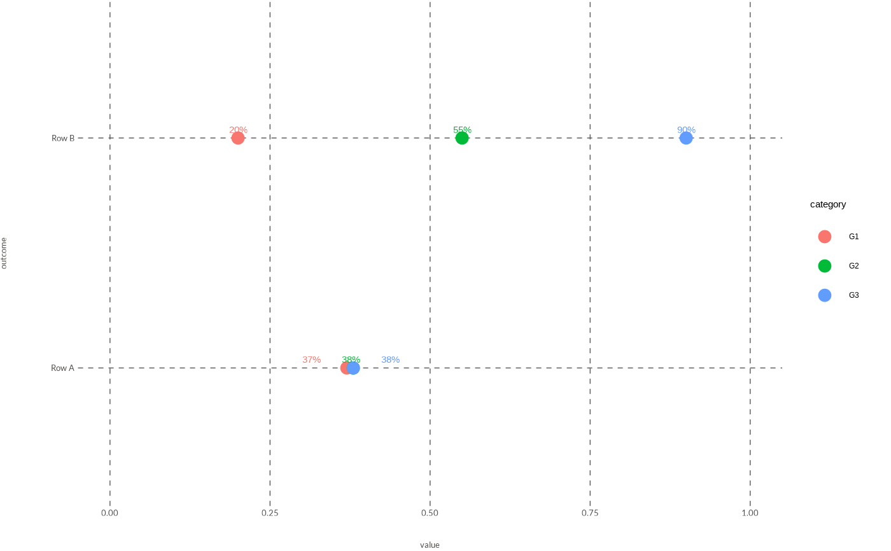

![[Experimental]](figures/lifecycle-experimental.svg)
spread_labels_x() is a low-level, deterministic helper for row-based point
charts (for example wjp_dots() or wjp_lollipops()). When several
observations in the same row share equal or nearly equal values, the
percentage labels placed above their points overlap and become unreadable.
The helper keeps every point at its true value and every label on the same vertical level, and moves only the labels horizontally by the minimum distance required to prevent collisions. This avoids the vertical stair-stepping and connector lines produced by general-purpose repulsion, yielding a compact result that stays consistent with the visual language of the chart.
Usage
spread_labels_x(
x,
labels = NULL,
min_gap = NULL,
limits = NULL,
preserve_center = TRUE,
padding = grid::unit(1.5, "mm"),
panel_width = grid::unit(150, "mm"),
font_size = 3.514598,
family = wjp_font_family(),
tol = 1e-08,
details = FALSE
)Arguments
- x
Numeric vector of the original point positions, in data units.
NApositions are returned asNAand excluded from the solve.- labels
Optional character vector (same length as
x) whose rendered width is used to size the required separation. Requireslimits. Ignored whenmin_gapis supplied. Default isNULL.- min_gap
Optional numeric scalar giving a fixed minimum centre-to-centre distance between adjacent labels, in data units. Takes precedence over
labels. Default isNULL.- limits
Optional numeric vector of length 2,
c(lower, upper), giving the panel range in data units. The whole label group is kept inside these limits. Required whenlabelsis used (to convert text widths to data units). Default isNULL.- preserve_center
Logical. If
TRUE(default) the adjusted group is kept centred on the original centroid (minimum squared displacement). IfFALSE, a forward-only pass is used. Default isTRUE.- padding
Extra space added between adjacent label bounding boxes, as a grid::unit (converted to data units via
limits/panel_width) or a numeric value in data units. Only used on thelabelspath. Default isgrid::unit(1.5, "mm").- panel_width
Physical width of the plotting panel, as a grid::unit or a numeric value in millimetres. Together with
limitsit sets the data-units-per-millimetre scale used to convert measured text widths. Only used on thelabelspath. Default isgrid::unit(150, "mm").- font_size
Numeric. Label size in the same units as
ggplot2geom_text(size = )(millimetres). Only used on thelabelspath. Default is3.514598(the WJP 10 pt value-label size).- family
String. Font family used to measure the labels. Only used on the
labelspath. Default is the active WJP family (seewjp_font_family()).- tol
Numeric. Numerical tolerance used when comparing gaps and panel limits. Default is
1e-8.- details
Logical. If
TRUE, returns a list with the adjusted positions plus diagnostics instead of a bare numeric vector. Default isFALSE.
Value
By default, a numeric vector of adjusted horizontal positions in the original
order of x. If details = TRUE, a list with:
xAdjusted positions (original order).
inputThe original
x.displacementxadjusted minusxinput.max_displacementMaximum absolute displacement.
half_widthPer-label half-width in data units (original order).
collidedTRUEif the input positions overlapped.feasibleFALSEif the labels cannot fit insidelimits.
Details
The function returns adjusted horizontal positions for the labels; the points
themselves are never modified. It works within a single row or group at a
time, so it is meant to be called inside a dplyr::group_by() /
dplyr::mutate() pipeline (see Examples).
Two ways to size the required separation are supported:
min_gap(data units): a fixed minimum centre-to-centre distance between adjacent labels. This path needs no graphics device and produces fully reproducible output; it is the simplest option when the labels are similar in width.labels(text): the rendered width of each string is measured (with systemfonts when available, otherwise a deterministic character-count estimate) and converted to data units usinglimitsandpanel_width. Use this path when the strings differ substantially in width.
The solver is deterministic. With preserve_center = TRUE (default) it uses
an isotonic (pool-adjacent-violators) fit that minimises the total squared
displacement, which keeps the centre of the label group on the original
centroid. With preserve_center = FALSE it uses a single forward pass
anchored at the first label, pushing labels forward only. In both cases,
labels that are already separated are left untouched, identical inputs always
produce identical output, and the original row order is restored on return.
When limits is supplied, the whole label group is rigidly shifted back
inside the panel if it crosses a boundary; a rigid shift preserves the
separations, so boundary handling never reintroduces collisions. If the
combined label widths cannot fit inside limits, the function emits a warning
and returns a best-effort, left-aligned layout with feasible = FALSE (see
details) rather than silently overlapping labels.
The helper targets Cartesian, continuous horizontal scales. Logarithmic, transformed, or otherwise non-linear scales are not handled: convert the positions to the linear coordinate system before calling.
Examples
# Fixed-gap mode: four nearly identical values kept from overlapping
spread_labels_x(c(0.37, 0.38, 0.38, 0.38), min_gap = 0.03)
#> [1] 0.3325 0.3625 0.3925 0.4225
# Already-separated values are returned unchanged
spread_labels_x(c(0.1, 0.5, 0.9), min_gap = 0.03)
#> [1] 0.1 0.5 0.9
# The group is kept inside the panel limits
spread_labels_x(c(0.95, 0.96, 0.97), min_gap = 0.04, limits = c(0, 1))
#> [1] 0.90 0.94 0.98
# Diagnostics
spread_labels_x(c(0.5, 0.5, 0.5), min_gap = 0.05, details = TRUE)
#> $x
#> [1] 0.45 0.50 0.55
#>
#> $input
#> [1] 0.5 0.5 0.5
#>
#> $displacement
#> [1] -0.05 0.00 0.05
#>
#> $max_displacement
#> [1] 0.05
#>
#> $half_width
#> [1] 0.025 0.025 0.025
#>
#> $collided
#> [1] TRUE
#>
#> $feasible
#> [1] TRUE
#>
# Text mode: separation sized from the rendered width of each label
vals <- c(0.37, 0.38, 0.38)
spread_labels_x(
x = vals,
labels = scales::percent(vals, accuracy = 1),
limits = c(0, 1)
)
#> [1] 0.3149259 0.3766667 0.4384074
# \donttest{
# Typical use inside a plotting pipeline
library(dplyr)
library(ggplot2)
wjp_fonts()
chart_data <- tibble::tibble(
outcome = rep(c("Row A", "Row B"), each = 3),
category = rep(c("G1", "G2", "G3"), times = 2),
value = c(0.37, 0.38, 0.38, 0.20, 0.55, 0.90)
)
label_data <- chart_data %>%
group_by(outcome) %>%
mutate(
label = scales::percent(value, accuracy = 1),
label_x = spread_labels_x(value, labels = label, limits = c(0, 1))
) %>%
ungroup()
ggplot(label_data, aes(value, outcome, color = category)) +
geom_point(size = 3) +
geom_text(aes(x = label_x, label = label), vjust = -0.8, show.legend = FALSE) +
scale_x_continuous(limits = c(0, 1)) +
WJP_theme()

# }